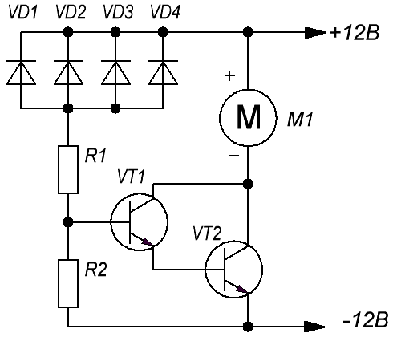

Регулятор скорости вентилятора-1

Таблица 1
| Обозначение | Наименование | Номинал | Кол-во | Примечание |
|---|---|---|---|---|
| M1 | Электромотор вентилятора | 1 | ||
| R1 | Резистор постоянный | 2 кОм - 0,25 Вт | 1 | |
| R2 | Резистор постоянный | 75 кОм - 0,25 Вт | 1 | |
| VD1-VD4 | Диод | Д9Б | 4 | |
| VT1 | Транзистор биполярный | КТ315Б | 1 | |
| VT2 | Транзистор биполярный | КТ815В | 1 |
Датчиком температуры в данном устройстве служат германиевые диоды VD1-VD4, включенные в обратном направлении в цепь базы составного транзистора VT1VT2.
Резистор R1 защищает транзисторы VT1 и VT2 от теплового пробоя диодов. Его сопротивление выбирают, исходя из предельно допустимого значения тока базы VT1. Резистор R2 определяет порог срабатывания регулятора.
Число диодов датчика температуры зависит от статического коэффициента передачи тока составного транзистора VT1VT2. Если при комнатной температуре и включенном питании вентилятора не вращается, число диодов следует увеличить. Необходимо добиться того, чтобы после подачи напряжения питания она уверенно начинала вращаться с небольшой частотой. Если частота вращения вентилятора окажется значительно больше требуемой, число диодов следует уменьшить.
Одноименные выводы диодов VD1-VD4 соединить вместе, расположив их корпусы в одной плоскости вплотную друг к другу. Полученный блок приклеивают термостойким клеем к теплоотводу.
Налаживание устройства сводится к подбору резистора R2. Временно заменив его подстроечным резистором сопротивлением 100-150 кОм, подбирают такое сопротивление введенной части, чтобы при номинальной нагрузке вентилятор вращался с небольшой частотой.